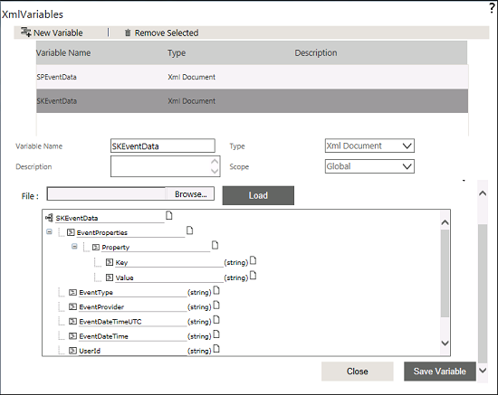
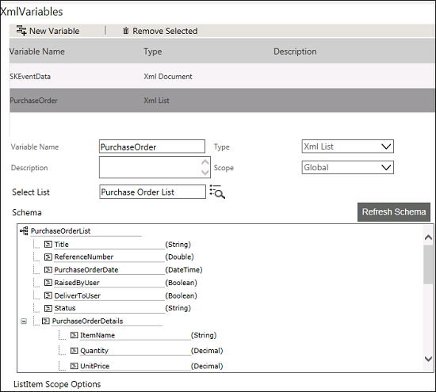
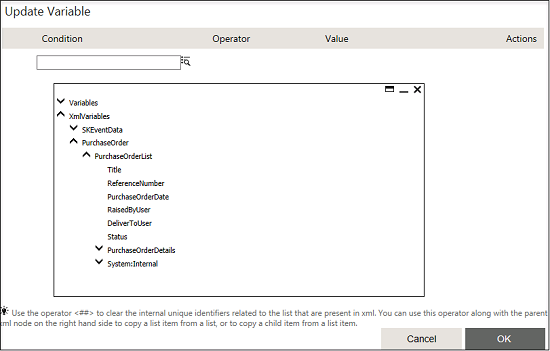
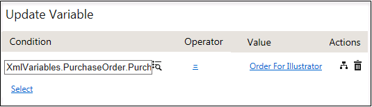

No
Forms XmlVariables
Updating the list item that alerted the workflow
AVEVA Work Tasks allows you to update the list item that alerted the workflow using XML List type XML variable. Update Variable activity can be used to add or update an item to the list. To update an item you need to select the scope as Current from Choose the List Item to Work on options. You can also use List Navigator Activity to set the scope.
Assume that you have created a list called Purchase Orders with the following fields and alerted the workflow.
- Reference Number
- Purchase Order Date
- Raised By User
- Deliver To User
- Status
- Purchase Order Details
- Item Name
- Quantity
- Unit Price
- Item Total
- Total Purchase amount
Now you want to update an item in the same list. Follow the procedure.
- Log on to the Enterprise Console and go to workflow designer page.
You need to create an XML List type XML variable for the Purchase Orders list. If the variable is not created, follow the below mentioned procedure to create. - Click the edit icon in the XMLVariables property from the Start Activity Properties. The following screen appears.

- Click New Variable to add a new variable.
- Enter the variable name as PurchaseOrder.
- Select XML List as Type from the drop-down list.
- Enter the List name or click the icon to select the list. In this case select Purchase Order List.
- Select the scope Current option from the Choose the ListItem to work on options to point to an item in the Purchase Order List.

- Now you can see the XML nodes in a tree-view that are mapped to the controls while creating the list.
- Click Save Variable. A message is displayed saying 'Variable Updated'. Close the window.
Note: If you set the scope as New while creating the XML List type XML variable, you can change it in to Current using List Navigator activity.
- Drag and drop the Update Variable activity to update an item in the list.

- Click the edit icon in the Set Variables property.
- Click the Select link and select the respective field of the XML List type XML Variable created for the list (in this case PurchaseOrder). The fields displayed in the tree-view are representing the XML nodes of the controls in the list.
- Select a field for that you want set the value from the tree-view. Then enter the value for the field in the right-hand side text box or click to set the value.
- If you want to set the value, select enter a value from the tree-view, and then enter the value. Also you can select variables or contents or any XMLvariables nodes directly by selecting the respective node from the tree-view. If you want to combine multiple node values, you can build an expression by selecting Build Expression.

- The same way you can set the value for other fields that you want to update. In this case, you are only updating the field 'Title' which has the value 'Order for Illustrator'.
- Click OK. When you execute this workflow, the item get updated based on the value that you have set.
Note: For number data types, the minimum and maximum values are not validated. Enter only valid numeric values for number data types. For numeric, DateTime, Date, or Time data types, ensure that the respective value is based on the culture set.
You can enter the input or use the Date and Time picker to enter the required date and time.
Date.CurrentDate is not supported. Use the tree view option to pick the required date and time.
The time format supports long data type to enable you to enter seconds.